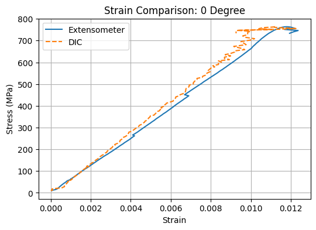
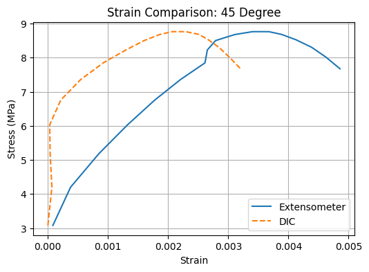
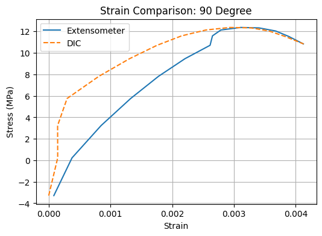

06 / Composite materials testing / Completed laboratory study
AE461 · Four-person laboratory team
Comparing composite tensile behavior with extensometer and DIC strain
I contributed the stress–strain comparison, specific modulus and specific strength analysis, experimental apparatus description, and uncertainty discussion for a team study of graphite/epoxy coupons. The report connects manufacturing history to tensile behavior at 0°, ±45°, and 90° fiber orientations.
- My contribution
- Stress–strain comparisons, specific modulus and strength, apparatus and uncertainty documentation, and manufacturing-quality discussion
- Tools
- Composite materials · Tensile testing · Digital image correlation · Experimental uncertainty
- Outcome
- Strong orientation dependence, with measured strength and stiffness differing from ideal predictions

Connect manufacturing to tensile response
The team tested graphite/epoxy coupons with fibers aligned with, transverse to, and at ±45° to the loading direction. Instron load measurements and specimen dimensions gave engineering stress; an extensometer and digital image correlation supplied strain measurements.
The report also incorporates the earlier composite-manufacturing work. My contributions there covered manufacturing quality, room temperature and humidity, and cure-cycle history.
My analysis and documentation
I completed the stress–strain curve section and the specific modulus/specific strength section, comparing properties on a mass-normalized basis. I also documented the apparatus and sources of uncertainty, including specimen thickness, alignment, and DIC image quality and region selection.
The report assigns the primary modulus and strength extraction to E. Bennett, the off-axis property and failure-load predictions to A. Alptekin, and laminate engineering constants and modulus comparisons to S. Konakanchi. Those results are credited to the team rather than presented as my sole analysis.
{kind=link}

What the tests established
The report gives 68.64 GPa modulus and 807.7 MPa ultimate tensile strength for the 0° specimen.
The 0° specimen was the stiffest and strongest; the 90° specimen was weakest in tension; the ±45° specimen sustained the largest strain before failure. The report’s specific-property comparison preserves the same directional trends.
Quantitative agreement with ideal micromechanics and laminate predictions was limited. The 0° and 90° coupons failed below predicted loads, while the ±45° coupon exceeded its prediction. The report calls the failure model conservative for that tested shear-dominated specimen and discusses manufacturing and measurement uncertainty as possible causes of disagreement.
{kind=link}

{kind=link}